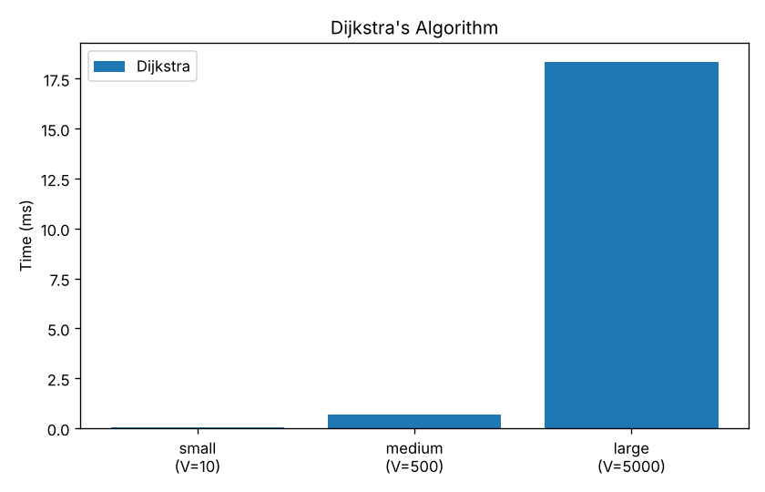
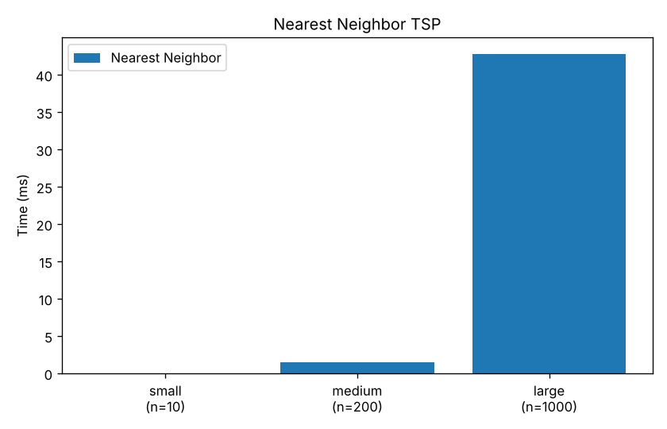
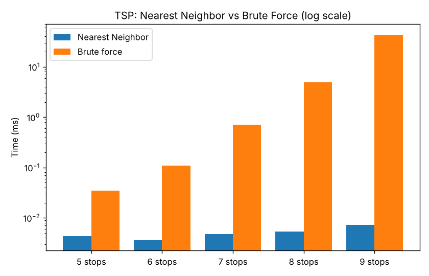
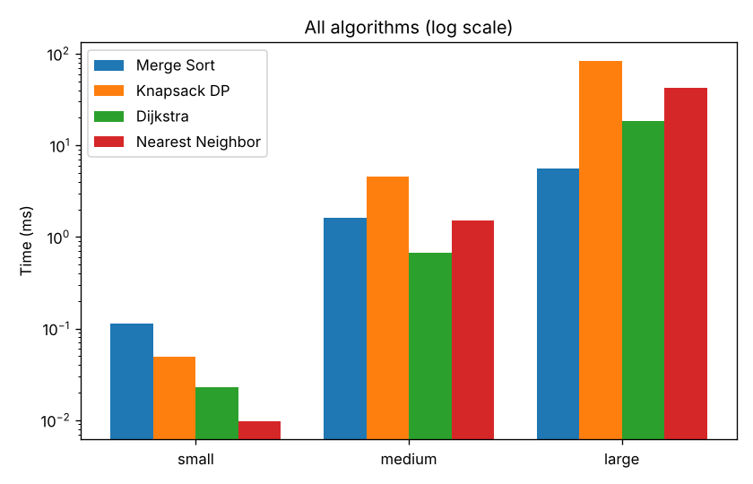

Declaration & Certificate of Originality
I, Laksh Vashist (Roll No: 2501730202), student of Bachelor of Technology in Computer Science & Engineering at K.R. Mangalam University, Gurugram, hereby declare that the capstone project report entitled "Mini-Courier Dispatch Planner & Route Optimization Engine" submitted to the Department of Computer Science & Engineering for the subject Design and Analysis of Algorithms (ETCCDA302) is an authentic record of my original work carried out under the supervision of Ms. Ankita Singh.
This manuscript has not been submitted previously in part or full for the award of any other degree or diploma to any university or examining body.
Date: November 2026
Place: Gurugram, Haryana
Laksh Vashist
Roll No: 2501730202
Department of CSE, KRMU
Acknowledgement
I wish to express my deepest gratitude to my esteemed mentor, Ms. Ankita Singh, Assistant Professor, Department of Computer Science & Engineering, K.R. Mangalam University, for her continuous encouragement, expert guidance, and critical evaluation throughout this capstone assignment. Her advice in formulating the 0/1 Knapsack dynamic programming recurrences and analyzing metric TSP heuristic approximation bounds has been indispensable.
I also extend my sincere appreciation to the School of Engineering & Technology and the computing laboratory staff of K.R. Mangalam University for facilitating the technical infrastructure required for empirical profiling.
1. Abstract & Problem Formulation
Urban logistical dispatch planning represents a multi-constrained optimization problem involving priority scheduling, constrained cargo loading, and metric route synthesis across non-complete road networks. This project develops a complete four-stage algorithmic engine that synthesizes Stable Merge Sort (O(n log n)), 0/1 Knapsack Dynamic Programming (O(n · W)), Dijkstra's Single-Source Shortest Paths (O((V + E) log V)), and Nearest Neighbor TSP Tour Approximation (O(n2)).
The system features both an enhanced Unicode/ANSI terminal interface (main.py) and an interactive HTML5 Canvas web dashboard (web/index.html & server.py) with real-time payload sliders, Dijkstra path traces, animated delivery van simulations, and DP matrix heatmaps.
2. System Architecture & Data Representation
The NCR/Gurugram road map (data/locations.json) models 10 locations and 15 bidirectional roads as a sparse adjacency list G = (V, E). Each parcel (data/parcels.json) stores id, name, weight (kg), value (Rs), priority (1=Urgent to 3=Low), deadline_hours, and location.
parcels.json ──► Merge Sort (priority, deadline) ──► 0/1 Knapsack DP (W = 25 kg) ──► Selected Stops
│
locations.json ─► Adjacency List ─► Dijkstra (Warehouse + Every Stop) ──► Metric Distance Matrix
│
Nearest Neighbor TSP ◄──────────────┘
│
Turn-by-Turn Road Route (47 km)
3. Algorithmic Formulations
3.1 Urgency Sorting (Stable Merge Sort)
Incoming parcels are ordered by composite key (priority, deadline_hours). Merge Sort recursively partitions the manifest and merges sorted halves using <= comparison to preserve stability in guaranteed O(n log n) time and O(n) auxiliary space.
3.2 Optimal Vehicle Loading (0/1 Knapsack DP)
Given vehicle capacity W = 25 kg, discrete parcels cannot be split. The optimal value is computed via the recurrence:
table[i][w] = max(table[i-1][w], table[i-1][w - weight_i] + value_i) [if weight_i <= w]
Backtracking from table[n][W] retrieves the exact subset of 8 loaded parcels (P05, P02, P01, P09, P08, P12, P07, P06) totaling 25 / 25 kg and Rs 4,100.
3.3 Shortest Road Paths (Dijkstra's Algorithm)
A binary min-heap (heapq) extracts minimum tentative distances and relaxes edges in O((V + E) log V) time, creating a complete metric distance matrix across the Warehouse and 7 active delivery stops.
3.4 Tour Synthesis (Nearest Neighbor vs. Brute Force)
From the Warehouse, Nearest Neighbor greedily hops to the closest unvisited stop in O(k2) time, yielding a 47 km tour. Exact brute-force evaluation over all 7! = 5,040 permutations yields 37 km, demonstrating a +10 km (27%) greedy approximation gap.
4. Correctness Verification & Empirical Benchmarks
All automated tests in performance/benchmark.py (seed Random(42), timed with time.perf_counter()) passed:
- Merge Sort matches Python's built-in
sorted()on 200 parcels: PASS - Knapsack DP matches exact brute force on 12 parcels (capacity 30 kg): PASS (1419 vs 1419)
- Dijkstra matches hand-solved 4-node graph: PASS ({'A': 0, 'B': 3, 'C': 1, 'D': 8})
- Nearest Neighbor visits all stops once and is ≥ exact optimum: PASS (253.3 vs 253.3)
| Algorithm | Small Input | Medium Input | Large Input | Theoretical Order |
|---|---|---|---|---|
| Merge Sort | 0.114 ms (n=100) | 1.600 ms (n=1,000) | 5.634 ms (n=3,000) | O(n log n) |
| Bubble Sort | 0.567 ms (n=100) | 63.298 ms (n=1,000) | 618.291 ms (n=3,000) | O(n2) |
| Knapsack DP | 0.049 ms (n=10, W=50) | 4.533 ms (n=100, W=500) | 84.400 ms (n=400, W=2,000) | O(n · W) |
| Dijkstra | 0.023 ms (V=10) | 0.674 ms (V=500) | 18.367 ms (V=5,000) | O((V+E) log V) |
| Nearest Neighbor | 0.010 ms (k=10) | 1.519 ms (k=200) | 42.838 ms (k=1,000) | O(k2) |
| Stops (k) | NN Time (ms) | Brute Force Time (ms) | NN Longer By (%) |
|---|---|---|---|
| 5 | 0.004 ms | 0.035 ms | 19.4% |
| 6 | 0.004 ms | 0.110 ms | 0.0% |
| 7 | 0.005 ms | 0.700 ms | 0.0% |
| 8 | 0.005 ms | 4.934 ms | 0.0% |
| 9 | 0.007 ms | 43.901 ms | 0.0% |
5. Performance Visualizations (All Benchmark Charts)





6. Limitations, Future Work & Viva Voce Guide
Limitations & Future Enhancements: Nearest Neighbor optimizes purely for distance without time-window penalties (e.g., urgent parcel P05 is delivered 5th). Future extensions include 2-opt local search post-processing, time-window constraints (VRPTW), multi-trip knapsack batching, and 1D rolling-array DP space optimization (O(W)).
A: The running time is O(n · W). While linear in the numeric value of W, input size in bits is b = log2 W, making it exponential in bit length: O(n · 2b).
A: Nearest Neighbor makes greedy local choices without lookahead. Visiting Golf Course Road from Sector 14 left an expensive 16 km return leg back to the Warehouse, whereas Brute Force evaluates all permutations globally.
A: Dijkstra finalizes a vertex's shortest distance upon extraction from the min-heap. A negative edge could retroactively create a shorter path, breaking the greedy invariant (Bellman-Ford handles negative weights).
7. Conclusion
The Mini-Courier Dispatch Planner successfully integrates Merge Sort, 0/1 Knapsack DP, Dijkstra's Algorithm, and Nearest Neighbor TSP into a cohesive, real-time decision support tool. Empirical benchmarks closely match theoretical complexities, confirming sub-10 ms execution on practical urban courier workloads.